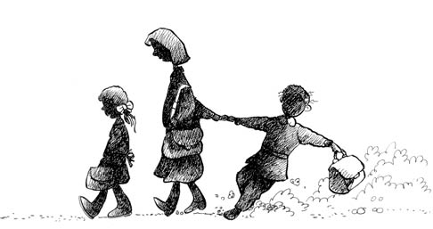

KARDEŞİM OKULA BAŞLIYOR
3. sınıf, üç ayrı okulda okumanın verdiği şaşkınlıkla olsa gerek harala gürele bitti. Normalde ilkokul tek bir okulda biterken, ben bir sınıfı üç ayrı okulda okuma bahtına erişmiş bir öğrenciydim. Okuyacak okul bulamayan yaşıtlarımın olduğu yıllarda, bir sınıf, üç ayrı okul! Karnem, anayı babayı utandırmayacak, konuyu komşuyu sevindirmeyecek bir durumda. Evdekiler de karnemi görünce mutlu mesut oldular. Devamlılık yeter göğüslerinin kabarmasına.
Kıbrıs Savaşı günleri, üç ayrı okul derken okuma yazmayı unutmamak da az buz iş değil tabii. Kardeşim de “Bakacağım” deyip karnemi inceledi. Artık neyi merak ettiyse söktüremedim. Hani okula gitmeden meraktan ya da kendinden önce okula başlamış kardeşten okuma öğrenen çocuklar olur, Aytül’ün zerre kadar harf bilmeden benim karneme bir bakışı var... Gören der ki, “Notları yazarken kesin bu kıza da sormuşlar.”
Gerçekten de öyleydi. Ben okula gitmeden sayıları, bir de okuyamasam da harflerin çıkardığı sesleri bilirdim de, kardeşim okul öncesi, karneye derin derin baktığı anlarda da dâhil olmak üzere, harften nasipsizdi.
Ben 4. sınıfa başlarken kardeşimin de 1. sınıfa başlayacağı günler gelmek üzere. Bir öğleden sonraydı, babam, “Kardeşini de senin okula yazdırıyoruz” dedi. “O zaman benim gitmeme gerek kalmaz” manasındaki bakışıma aldırmadan devam etti: “Sen ne dersin?” Hoppala! Babam bana soruyor! Gerçekten de bunu demiş adamdır babam. Ne denir ki bu durumda? Bildiğim, ilköğretim mecburi. Hani köyde falan otursak, inekti tarlaydı derken zaman geçer, insan evlenir, sonra da köy okuluna gönüllü gidip okuma yazmayı da söker, yaşar gider. Ama Bursa’nın göbeğinde mecbur gidecek. Zaten seçenek olsa, ben gitmezdim. Benim ne suçum vardı! “Tabii yazdıralım baba, Aytül de okusun” demeyecek kadar da vicdan sahibi olduğumdan şunu dediğimi hâlâ hatırlarım: “Bence çok başarılı olur!”
Kardeşim her yeni okul başlangıcında kendine ufak tefek kalem, silgi aldırırdı. Oyuncağımsı bir okul çantası bile vardı. Ben de bunu anlamazdım; okulla oyun mu olur! Yok daha okula gitmeden, defterdi, çantaydı diye tutturan çocuklar görünce inanın hayret ederdim. Bu işin ciddi, sevimsiz, nasılsa olacak ve elini versen kolunu alamayacağın bir iş olduğunu kısa zamanda, hatta okumadan da önce söktüydüm.
O yaz, hem Ramazan ayına denk gelen, hem de fırın sıcaklığında geçen bir yazdı. Okul işleri kadar bir de oruç, iftar işleri olurdu. Bursa bu konuda gerçekten de yaşayan bir şehirdir. Oturduğumuz semtte cami, türbe çok. Yolun alt tarafı zaten mezarlık. Evin yüz metre ötesi benim okul. Nasıl ama bizim muhit?
Oruç tutma oranı, okuryazarın iki katı. Benim yaşımdaki pek çok arkadaşım oruç tutuyor. İftar, akşam saat sekiz civarı. Kardeşim o yaz duyguları nasıl kabardıysa, “Arkadaşlarımla ben de kursa gideceğim” dedi. Kurs dediği, Zeyniler Camii’nde verilen Kuran kursu. Babam, “Olur, git kızım” dedi. Ben her zaman olduğu gibi eğitimin her türlüsüne mesafeliyim.
Bir süre gerçekten de apartmandaki ve mahalledeki yaşıtlarıyla kursa gitti. İlk zamanlar işi kolaydı. “Elif, be, te...” diye evde sıralamaya başladı. Sayesinde sadece duyarak harflerin adını ben de kısa zamanda söktüm. Ancak bir şey vardı; baktığı şeklin hangi harf olduğunu sökme konusunda Aytül pek de şanslı değildi. Acaba harf mi ters geldi, sağdan yazıldığı için desem, o da değil, çünkü soldan olanı da henüz bilmiyordu. Velhasıl bir aya yakın süren Arapça kariyerinde, birkaç namaz suresi ezberlemek dışında kardeşim işi söktüremedi. Ben de kursa gözlemci olarak katılıyorum; Aytül Zeyniler Camii’ne gidip geliyor, ben sokakta oyunun belini kırıyorum.
Bir gün nasıl aklıma geldiyse, “Arkadaşlar oruç tutuyor, ben de tutarım” dedim. “Olur” dedi babam. Babam gerçekten de hayat adamıdır. Neye el attıysam, eğer kafamı gözümü yaracak bir iş değilse her zaman olur demiştir. Bu işe de anında olur dedi. Ama bu iş benim kafamı gözümü yarmadıysa da dilimi damağımı bir kuruttu ki, o kadar olur. Tevekkeli, Şerif oruç tuttuğunda evden çıksa da pek koşturmazdı. İkindi zamanı ben neredeyse buhar olmuştum. Oruçlu oruçlu iki mahalle maçı sonrasında, “Ulan, ben ne ettim!” noktasına gelmeniz beş dakikanızı almıyor yaz sıcağında. Akşam sekize doğru, kazandığım sevap nerdeyse bütün günahlarıma denk hâle geldiğinde top patladı. Sonraki günlerde kardeşimin derslerine gözlemci olarak katılmam dışında Allah’ın işine pek karışmadım.
Okul hazırlığı işlerinden bahsederken alışverişti, yeni ayakkabıydı, önlüktü derken bir şeyi anlatmasam kalemim açık gider... Zeyniler’deki kurs devam ederken ara sıra da namaz vakitlerinde kardeşim kızlarla camiye, namaza da giderdi. Bir Cuma kalabalığında okul için yeni alınan ayakkabının cami önünde devletleştirilmesi sonrasında eve yalın ayak gelince evde epeyce laf olmuştu. İzmir’den gelmişiz, camilerin bu işler için de kullanıldığını o zamanlar bilmediğimizden ilk öğrenen kardeşim oldu. Babam, anneme göre hep rahattı. Ayakkabıyı camide çaldırmaktan alınan dersin kıymeti ayakkabıdan katbekat fazla olduğu için babam bu işe gülüp geçti tabii ki. Ama konu akçalı olunca annem az buçuk burulmadı desem yalan olur.
Günler geçti, hazırlıklar tamamlandı. Bana da kardeşimle birlikte yeni çanta alındı. Hep hayret etmişimdir; orta son sınıfa kadar her ders yılı başında bana yeni bir çanta alınırdı. Hevesim kaçmasın diye mi, yoksa çantaların üç ayda tanınmayacak bir hâl almasından mıdır nedir...
Okulun ilk günü kardeşimin kıvırcık saçları taranmaya çalışıldı, ikiye ayrılıp kurdeleler takıldı. Siyah önlük, beyaz yaka, ayaklarında parlak kırmızı ayakkabıları; kızlarda âdettir, üç kuruş fazla olsun kırmızı olsun denir. Annem ikimizi de önüne kattı, hadi Emirbuhari İlkokulu’na...
Sen misin yıllardır ben okula giderken camdan kapıdan bakan! Aha yaşadın, çok şükür, gördün okulun yolunu. Bak bakalım elini verince kol geri alınıyor mu! 1975 senesi. Aytül 1. sınıfa, ben 4. sınıfa başlıyoruz, durmak yok, devam…